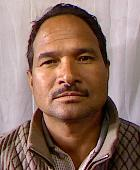

कर्णाली प्रदेशमा कुल मतदाता १०३७२४७ रहेका छन्, जसमा पुरुष ५२७८८६, महिला ५०९३६१ र अन्य ० मतदाता समावेश छन्। यस प्रदेशअन्तर्गत सल्यान, डोल्पा, मुगु, जुम्ला, कालिकोट, हुम्ला, जाजरकोट, दैलेख, सुर्खेत र रूकुम पश्चिम जिल्लाहरू रहेका छन्। कुल प्रतिनिधि सभा निर्वाचन क्षेत्र संख्या १२ रहेको छ।


